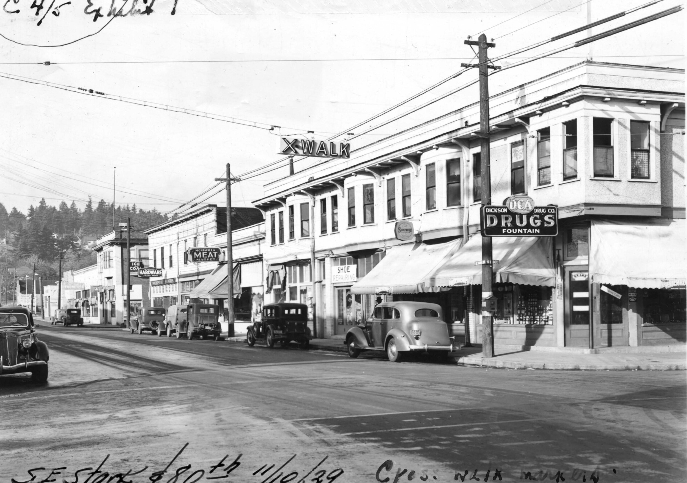
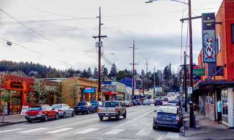

An urban escape in the heart of Montavilla. Near public transportation, freeways, and hospitals.

NE Stark Street looking at Mt. Tabor. ca.1929

NE Stark Street Looking at Mt. Tabor. ca.2008
Historically a hub for streetcars and local shops, the main streets of Montavilla have hardly changed in some places. It borders the Historic
Laurelhurst Neighborhood, and Laurelhurst Park. Mt. Tabor Park is a popular local spot within walking distance, as is the Montavilla Farmers Market on Stark Street.
Here are some nearby activities and businesses we'd think you would like!